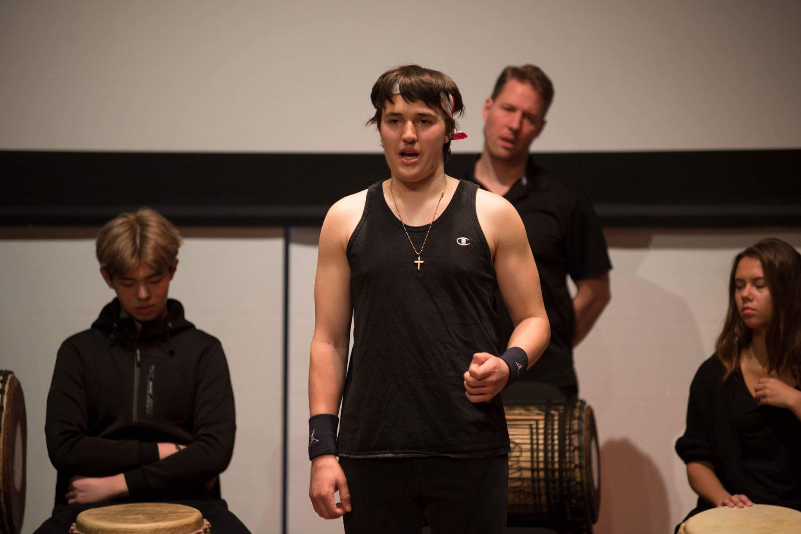
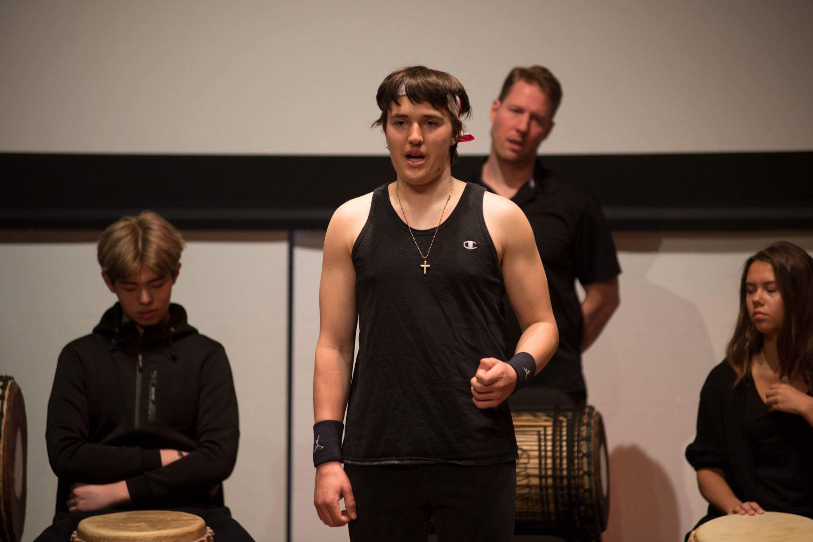

Field Academy
Posted on November 17th, 2017: 1:00PM
 

Where did you go? What did you do? What did you build? Why? For M-term I stayed on campus. I participated in the African Drumming Course. Throughout the course I learned some simple rhythms of Guinea and Sierra Leone on the westernized Djembe, Kenkene, Songban, and Dun Dunba. We learned about the famous Djembe Player, Mamady Keita, and how he preserved the traditional rhythms of Guinea by going around the world and teaching people how to drum. The four main rhythms covered in the course were Moribayassa, Soli, Djole, and Tiriba. A brief history and story was given to accompany the rhythms. Moribayassa was a ceremony and the name of a tree. Each Melinke village in Guinea had its own Moribayassa tree, where the Moribayassa Spirit was said to live. When women had a major problem of any kind, as a once-in-their-lifetime last resort they could pray to the spirit all night. If her prayers were answered, she would then dance the Moribayassa. To do the dance, she would dress up like a crazy person by wearing a tattered shirt or rags, shoes tied around her head, and pants (women of the Melinke culture wear skirts normally). Beginning and ending at the tree, she would dance around the village, followed by male percussionists and other women dancing. At the end of the ceremony, the clothes were either buried near the tree or burned outside the village. Soli was the rhythm played after the circumcision ceremony of young males and females. The rhythm was played to celebrate the rite of passage to adulthood. Djole was the only rhythm we covered not from Guinea; it was from Sierra Leone. Traditionally, it was played on siko drums, not djembes, and danced my masked dancers, whose masks depicted women. Now, it is popularized all over the western world. Tiriba is the name a a famous dancer known as “the Tiriba.” The dance and rhythm celebrates a ceremony where mothers pass on knowledge and tradition to their daughters to help them become good women. Today, Tiriba is popular in dance classes around the western world. Reflection on the experience/process. What did you find most interesting, A-ha moments, what were some of the challenges I loved the hands-on drumming experience; it was great fun to learn to properly tune the drum and how to play it. Playing the djembe to produce those crisp, high sounds takes some skill and is harder than it looks. It took me hours just to figure out how to properly hit the djembe to get it to produce good sound, while not hurting and beating up my hands too much. The trick is in hitting the rim with the “meat” of your palms (just below the knuckles), and bouncing off the drum at just the right speed and time, but not letting your thumb get injured on the rim by keeping thumbs up. It takes a heavy hand that is hardy and can repeatedly slap something hard for hours at a time to be a good drummer. Once your hands develop tolerance of the drumming, you can focus on learning the rhythms. Another challenge from drumming is tennis elbow, which can easily be fixed with simple ligament and muscle strengthening exercises. My favorite part of the course was a big performance of the four pieces we learned on the last day.
Design Project
Posted on November 17th, 2017: 1:00PM

Short description or narrative of the problem you’re trying to solve and the solution I came up with a solution to solve the problem of communications with those hard of hearing or sight, such as the elderly or mentally disabled. I made an app prototype that employs machine learning technology and connects to any standard bluetooth device and transmits wirelessly to it whatever the app records. My app has a few settings and modes- pairing mode (with the bluetooth) recording mode, image reading setting, text/screenshot reading setting, and hearing aid mode. Pairing mode is to make the app available to nearby devices. The app can then record and playback conversations at a desired volume, describe what is going on in and read any text in uploaded pictures, screenshots, or texts, and even serve as an affordable hearing aid (my app is free). During hearing aid mode, the phone would record and automatically transmit sounds from the user’s environment to his or her bluetooth device. Reflection on the process (what parts were most interesting to you; what were some challenges) It was a relatively short, but intense process. First I did some simple research about common disabilities and how they affected the daily lives of victims. Then I narrowed down the list and picked one I liked (intellectual disabilities) and researched it in depth and wrote a research report and summary on it. The research helped me to gain insight into the victims’ worlds and develop empathy for them. This led to inspiration for an idea to help the intellectually disabled, while also making an app that can help anyone with a hearing or vision disability. I then began doing some quick sketches of the app to get an idea of what it would look like. Then I made a finalized sketch in sharpie and used the Sketch software to make an online prototype to submit to the Cooper Hewitt design challenge.
Desk Lamp Project
Posted on November 17th, 2017: 1:00PM

For ilab this trimester, our group assignment was to work with Mr. Mulhern to make a handmade lamp. For my desk lamp I chose to use all three wood, metal, and clay components. This is what makes my lamp unique. My lamp base is composed of three circles of wood stacked on top of each other. I used every type of wood available to me, so I have a nice mix of colors on the lamp. I used a 10” circle of poplar, an 8” circle of mahogany, and a 4” circle of cedar. The circle stack has a 1” diameter hole drilled in the center of it. I will put a bent metal rod in the center and attach a clay lamp shade to the top of it and solder the wiring together to finish my lamp. For the light, I chose to use an led, because it is brighter, and more environmentally friendly than other choices, and less dangerous than a fire lamp. To gain inspiration for this design, I looked at handmade table lamps on google images.
So far, I have successfully completed the base. The base was the hardest part of the project, due to the amount of time and equipment it required to complete it. I started learning how to use table saws, band saws, and chop saws, soldering irons, and other basic shop tools. I learned the basic rules and safety guidelines for shop-working at Ross. Then I drew a scaled plan of my modern arc styled lamp. To make the base I drew the circles on wood with pencil and pizza-cutted them with a band saw. Then sanded down the edges with a belt sander. I used sandpaper to smooth and touch up the wood. When they were nice and smooth, I pre-drilled 4 holes in each circle. I attached the little circle to the medium circle and then the medium to the largest one. To finish, I applied finishing wax, and buffed to a glossy shine!
The two major challenges I faced were working with cedar and hiding my screws. Cedar is one of the softest, weakest types of wood, even though it has a pleasant smell and nice aesthetics to it. It was very hard to sand it without scratching the surface, and I had to go with the grain perfectly and not press to hard. While doing this, the cedar chipped, but luckily it was a quick and easy fix with some simple wood glue and tape to hold it while the glue dried. When working with wood, it is important to not show screws if it is not for construction purposes. This is why most furniture makers hide the crews and shine their wood. To hide the screws, I put them on the bottom of the base. To take things even a step further, I filled them in with wood glue and ⅜” pine dowel.